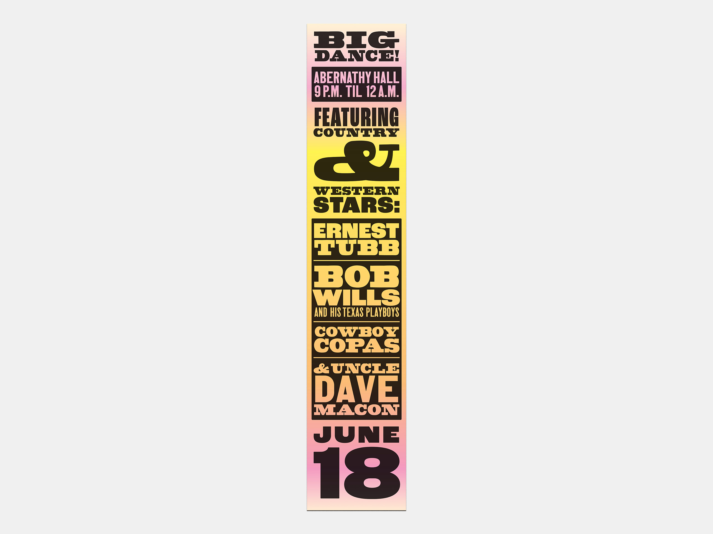

Recent Projects

This project came out of a desire to create a few letterpress posters for country and western musicians from the 40s and 50s. I approached the project by gathering inspiration from concert posters from the time period and then sketching out a few thumbnail compositions.

After a process of trial and error, I came upon the three layouts you see here. The biggest obstacles in creating these pieces were evenly spacing the letters and evenly distributing the text across the composition.